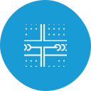
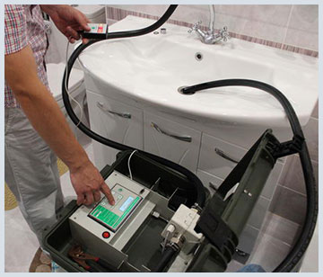
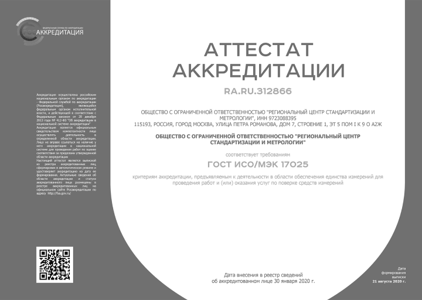
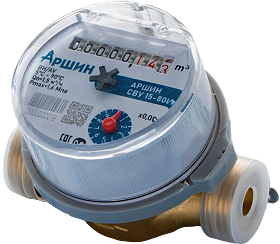

Наши преимущества
Государственная аккредитация
Низкие цены

Отсутствие очередей на поверку
Работаем без выходных
Аккредитованные специалисты
Как уберечься от мошенников?
Чтобы не попасть на мошенников перед поверкой коммунальных счетчиков, нужно обязательно проверять
аккредитацию компании.
Проводить поверки счетчиков и вносить данные в единый реестр Росстандарта могут только аккредитованные компании. Узнать об аккредитации компании можно в реестре аккредитованных лиц на сайте Росаккредитации.
Если вам предлагают услугу по неадекватно низкой цене - это верный признак мошеннической схемы, когда в качестве поверителей выступают “люди с улицы”. Обычно они приходят в дом без специального оборудования (которое стоит немалых денег), у них нет на руках копии аттестата аккредитации (аккредитация тоже платная и проводится на регулярной основе) и обещают внести данные о поверке в течение 3-х суток...
Мы несем ответственность за каждого нашего сотрудника. Все наши метрологи проходят специальное обучение и оснащены необходимым оборудованием. Результаты поверки в Аршин наши сотрудники вносят напрямую (без посредников).
Не доверяйте обещаниям провести поверку за 300-500 руб. Под предлогом поверки к вам могут прийти не только мошенники, но и другие криминальные личности. Ведь порог вхождения в бизнес по поверке от 300 тыс. руб. А реклама своих услуг съедает львинную долю прибыли. Рыночная стоимость поверки 1 счетчика от 750 руб. Показать ещё

Проводить поверки счетчиков и вносить данные в единый реестр Росстандарта могут только аккредитованные компании. Узнать об аккредитации компании можно в реестре аккредитованных лиц на сайте Росаккредитации.
Если вам предлагают услугу по неадекватно низкой цене - это верный признак мошеннической схемы, когда в качестве поверителей выступают “люди с улицы”. Обычно они приходят в дом без специального оборудования (которое стоит немалых денег), у них нет на руках копии аттестата аккредитации (аккредитация тоже платная и проводится на регулярной основе) и обещают внести данные о поверке в течение 3-х суток...
Мы несем ответственность за каждого нашего сотрудника. Все наши метрологи проходят специальное обучение и оснащены необходимым оборудованием. Результаты поверки в Аршин наши сотрудники вносят напрямую (без посредников).
Не доверяйте обещаниям провести поверку за 300-500 руб. Под предлогом поверки к вам могут прийти не только мошенники, но и другие криминальные личности. Ведь порог вхождения в бизнес по поверке от 300 тыс. руб. А реклама своих услуг съедает львинную долю прибыли. Рыночная стоимость поверки 1 счетчика от 750 руб. Показать ещё
Сертификаты на право поверки

{kind=link}

Что включено в стоимость замены или установка счётчика воды?
ВЫЕЗД СПЕЦИАЛИСТА
выезд специалиста метролога в пределах МКАД бесплатный.Обратите внимание на карту платных
выездов по Московской области
ПОВЕРКА СЧЕТЧИКОВ
вы можете остановить свой выбор на одной из предоставленных у нас марок или закупить счетчик
самостоятельно
УСТАНОВКА СЧЕТЧИКОВ ПРИ НЕОБХОДИМОСТИ
изделие позволяющее быстро и удобно присоединить водосчетчик к трубе, встроенный в нее
обратный
клапан не допустит движения воды в обратном направлении
ПЛОМБИРОВКА
пломбировка — обязательная процедура, без которой ни одна Управляющая компания не
зарегистрирует
прибор учета
ФИЛЬТР ГРУБОЙ ОЧИСТКИ
фильтр грубой очистки в обязательном порядке должен быть установлен перед прибором учета
воды,
во избежание засорения крыльчатки инородными частицами встречающимися в воде
ПАКЕТ ДОКУМЕНТОВ
после монтажа приборов учета мастер предоставит Вам пакет документов, который необходимо
будет
передать в Управляющую компанию, за которой закреплен Ваш дом
Мы сотрудничаем с лучшими производителями
Многолетний опыт работы нашей компании показал, что оптимальными для установки в квартирах являются
счетчики отечественного производства.
Они просты и надежны, имеют обязательную сертификацию и обычно исправно служат в пределах одного периода поверки (6 лет).
Почему не стоит покупать дорогие водосчетчики?
Необходимо понимать, что счетчики воды - это расходный материал, срок его службы ограничивается качеством коммуникаций (труб и воды). Если в квартире не установлены мощные фильтры воды, а также неидеальные условия подачи (отключение воды сезонное или профилактическое), то рассчитывать на безупречные показания по прошествии срока поверки (4 года) не приходится... Скорее всего, при поверке будет выявлена погрешность (износ щеток, размагничивание, разгерметизация и пр.) и счетчик придется менять.
Поэтому рациональней приобрести стандартный счетчик у официальной компании, которая занимается поверкой и установкой счетчиков.
Мы рекомендуем счетчики “Аршин”. Наши специалисты оценили надежность и универсальность приборов данного бренда.
Заказывайте поверку или замену счетчиков у нас и ваша забота об экономии станет нашей! Показать ещё

Они просты и надежны, имеют обязательную сертификацию и обычно исправно служат в пределах одного периода поверки (6 лет).
Почему не стоит покупать дорогие водосчетчики?
Необходимо понимать, что счетчики воды - это расходный материал, срок его службы ограничивается качеством коммуникаций (труб и воды). Если в квартире не установлены мощные фильтры воды, а также неидеальные условия подачи (отключение воды сезонное или профилактическое), то рассчитывать на безупречные показания по прошествии срока поверки (4 года) не приходится... Скорее всего, при поверке будет выявлена погрешность (износ щеток, размагничивание, разгерметизация и пр.) и счетчик придется менять.
Поэтому рациональней приобрести стандартный счетчик у официальной компании, которая занимается поверкой и установкой счетчиков.
Мы рекомендуем счетчики “Аршин”. Наши специалисты оценили надежность и универсальность приборов данного бренда.
Заказывайте поверку или замену счетчиков у нас и ваша забота об экономии станет нашей! Показать ещё
Люди, которые нам доверяют
СДЕЛАТЬ ЗАКАЗ
По телефону 8 (343) 361-05-35 или через форму ниже: